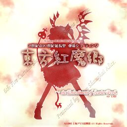

- Welcome to Touhou Wiki!
- Please register to edit. For assistance, check in with our Discord server or IRC channel.
Embodiment of Scarlet Devil
the Embodiment of Scarlet Devil | |
|---|---|
|
 | |
| Developer | |
| Publisher | |
| Released |
Trial: June 10, 2002 |
| Genre |
Vertical Danmaku Shooting Game |
| Gameplay |
Single-Player Story Mode |
| Platforms | |
| Requirements |
|
Touhou
Gameplay[edit]
the Embodiment of Scarlet Devil follows on from the PC-98 titles and Seihou in terms of basic gameplay, but makes certain key changes. The biggest change is the introduction of the Spell Card system. The pacing was also changed to a great degree, but some aspects of the PC-98 and Seihou "fast patterns" pacing remain in this game, which has given the Embodiment of Scarlet Devil a reputation for having a higher difficulty than later games. The following games, Perfect Cherry Blossom and Imperishable Night, would mostly remove this kind of pacing.
the Embodiment of Scarlet Devil once again features two playable characters to choose from with two equipment types each, much like Lotus Land Story. Reimu Hakurei can cover a wide area of the screen with weaker attacks, while Marisa Kirisame relies on speed and power to make up for a thinner attack spread. Each character and type has its own bomb as well, now called Spell Cards.
Another change from Lotus Land Story and Mystic Square is the introduction of an "Item Get" feature, which allows you to collect all items on the screen by moving to the top of the screen if you are at full power. This mechanic would appear in all later games. Finally, the Embodiment of Scarlet Devil introduces the counter-bomb system, allowing you to avoid a fatal hit by using a bomb at the moment you get hit, which also appears in later games.
One thing that remains from the PC-98 titles: there are six total stages in the main game, but playing on Easy difficulty will end the game after Stage 5. Completing Normal difficulty is once again required to unlock the Extra Stage as well.
Concept[edit]
ZUN's general goal when creating the Embodiment of Scarlet Devil was to stay away from systems appearing in newer shoot 'em ups, which he thought overly complicated the games, and to let the player have fun simply dodging bullets.[1] When he started creating the game it was first named Touhou Kouchakan (東方紅茶館 lit. "Eastern Scarlet Teahouse"), with the stage 3 theme being in reference to the name. However, ZUN felt the name didn't match the game's story so eventually it got changed.[2]
As the first Windows game, the engine was written from scratch using the DirectX API - with help from a few libraries from Amusement Makers - and ZUN apologizes for the seeming lack of creativity with things like grunt enemies, citing a lack of manpower while concentrating on building up libraries and tools himself.[3] This particular engine would later be used for the games Perfect Cherry Blossom, Imperishable Night, and Phantasmagoria of Flower View.
Story[edit]
During a peaceful summer in Gensokyo, an unnatural scarlet mist appears without warning and covers much of the land. It is strong enough to block out the sun, causing the affected areas to become dark and cold. Reimu Hakurei, a shrine maiden working at the Hakurei Shrine, and Marisa Kirisame, a magician, set out to find the source of the mist. Their search will lead them to the Scarlet Devil Mansion and to its eccentric owners...
Music[edit]
Like Kioh Gyoku, which was released a few months earlier, the soundtrack for this game was originally made with the Roland SC-88Pro MIDI module. However, before the game's release, ZUN arranged and re-recorded the tracks using the Roland Edirol SD-90, which ZUN got in late 2001.[4]
Two separate versions of the soundtrack with seventeen tracks each were included in the game. The WAV version is based on ZUN's later arrangement of the soundtrack, and mark a significant step up from the FM synthesis ZUN used for the PC-98 games. The MIDI version is based on the original compositions, and will only play correctly on an SC-88Pro. Recordings of the MIDI versions made using this module can be found here.
ZUN was aiming to give the music a "brighter" feel over the PC-98 games by attempting to add jazz fusion elements to the tracks. He goes on to say that Septette for a Dead Princess and U.N. Owen was her? were the songs he most thought of as representative of the Embodiment of Scarlet Devil.[3] Incidentally, these two songs are among the tunes most popular in the fandom.
Shanghai Alice of Meiji 17 and U.N. Owen was her? would later appear in the music album Dolls in Pseudo Paradise, with the former being the original version of the track.[4] Shanghai Scarlet Teahouse ~ Chinese Tea would also be arranged for Changeability of Strange Dream, and Locked Girl ~ The Girl's Sealed Room for Retrospective 53 minutes. U.N. Owen was her? was also arranged for a CD extra that came with the first volume of Strange and Bright Nature Deity, where it was redone to carry a more suitable tone for the manga.
In addition, Tomboyish Girl In Love would later be arranged in Phantasmagoria of Flower View retitled Adventure of the Lovestruck Tomboy.
Press[edit]
the Embodiment of Scarlet Devil was first announced on ZUN's website on April 15, 2002, approximately three and a half years after the release of Mystic Square. At this time, it was being developed under the name "Eastern Scarlet Teahouse" (東方紅茶館 Touhou Kouchakan); it was changed to the current name afterwards. Beginning with an early trial version on June 10, 2002, the trial versions went through a number of revisions until the game's final release at Comiket 62 on August 11, 2002. Patches would be released up until late that November, ending on version 1.02h.
In addition to its normal release, ZUN also released an exclusive Extra stage demo to doujin shops such as Tora no Ana and Akibaoukoku. In this version, the last part of the boss is much harder.[4]
Staff[edit]
ZUN — Programer, Graphic Designer, Music Composer
Ponchi (pbg) — Program Support
Special Thanks[edit]
ant
fang
and All Test Players
and you...
Reception[edit]
The characters of the Embodiment of Scarlet Devil continue to be some of the most popular ones in the Touhou Project. In particular, Sakuya Izayoi has consistently been in the top 4 in the Touhou Popularity Contests held by the Japanese Touhou Wiki since its inception after Comiket 63. Remilia Scarlet and Flandre Scarlet continue to be well-loved characters, as well. In addition to the ever-popular Septette for the Dead Princess and U.N. Owen was Her?, songs such as Shanghai Alice in Meiji 17 and Shanghai Scarlet Teahouse ~ Chinese Tea gained much recognition.
Gallery[edit]
Back Cover
Oldest known version of the Title Screen
Ver0.01 Title Screen
English patches[edit]
Touhou Community Reliant Automatic Patcher / THCRAP
- Community translations from the Touhou Patch Center wiki.
- Select lang_en during patching.
- Video walkthrough
- Also available as a pre-packaged standalone (not recommended).
These patches are a community translation based on Touhou Wiki and the English Touhou Patch Center Portal.
Visit the thpatch game page to find the specific patch contents for Embodiment of Scarlet Devil.
External links[edit]
Official[edit]
Unofficial[edit]
- Scoreboard at royalflare.net
- Scoreboard at Maidens of the Kaleidoscope
- Scoreboard at Shmups Forum
- Touhou scoreboards at Touhou.pl
- ZUN's MIDI files played on a real SC-88Pro
References[edit]
- ↑ the Embodiment of Scarlet Devil: Afterword — "Touhou Koumakyou brings things back to the starting point, by curbing the game systems that change the difficulty in obscure ways, while focusing on the natural fun of dodging bullets at the same time."
- ↑ ZUN (11 August 2005). "幻想の音覚" (in Japanese). 東方文花帖 ～ Bohemian Archive in Japanese Red: 22.
- ↑ 3.0 3.1 the Embodiment of Scarlet Devil: Afterword
- ↑ 4.0 4.1 4.2 ZUN's reply to messages on the former Gensou Bulletin Board 1